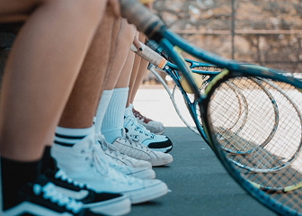
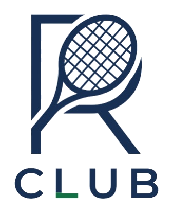
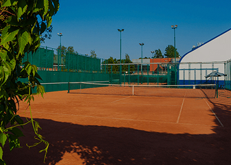
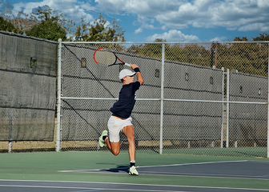
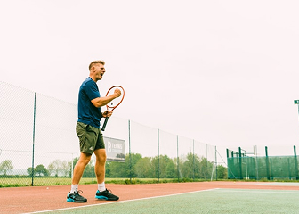
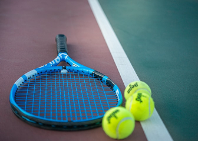
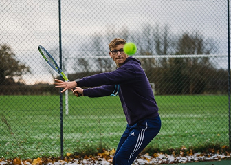

Любительський турнір з тенісу
Запрошуємо гравців будь-якого рівня взяти участь у любительському турнірі з тенісу. На переможців чекають кубки, цінні призи та клубні абонементи.


Запрошуємо гравців будь-якого рівня взяти участь у любительському турнірі з тенісу. На переможців чекають кубки, цінні призи та клубні абонементи.

Ми завершили планові роботи з оновлення хард-покриття на 2-му та 3-му кортах. Тепер гра стала ще комфортнішою та безпечнішою.

Відкрито набір у дитячі секції для вікових груп 5–8 та 9–12 років. Перше пробне тренування — безкоштовне!

Наших гостей чекає 2-годинний інтенсив від старшого тренера клубу. Розберемо ключові комбінації, подачу та позиціонування на корті.

Завітайте до нашого магазину інвентарю та випробуйте топові моделі ракеток від Head та Wilson під час тренування абсолютно безкоштовно.

Особливий формат для любителів нічного спорту! Запрошуємо на товариський турнір із гарною музикою, освіжаючими напоями та грою до самого світанку.